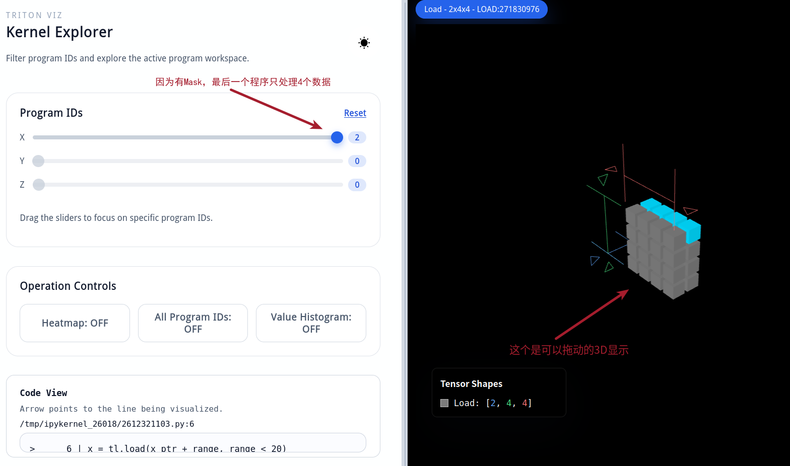

Triton Puzzles¶
学习目标¶
- 学习Triton常见API
- 学习使用triton_viz可视化Triton的操作
- 练习Triton Puzzles的题目
1. Triton API简介¶
完整的Triton API请参考官方文档，我们这里介绍一些常用的API。
1.1 triton.jit¶
1.1.1 函数签名¶
triton.jit(
*,
version=None,
repr: Callable | None = None,
launch_metadata: Callable | None = None,
do_not_specialize: Iterable[int | str] | None = None,
do_not_specialize_on_alignment: Iterable[int | str] | None = None,
debug: bool | None = None,
noinline: bool | None = None
) → Callable[[T], JITFunction[T]]
作用：使用 Triton 编译器将一个 Python 函数进行 JIT（Just-In-Time，即时编译） 的装饰器。
1.1.2 注意事项¶
1.1.2.1. 参数的隐式转换（Pointer Conversion）¶
原文： Note: When a jit’d function is called, arguments are implicitly converted to pointers if they have a
.data_ptr()method and a.dtypeattribute.
- 翻译：当调用一个被
@triton.jit修饰的函数时，如果传入的参数（例如 PyTorch 张量）拥有.data_ptr()方法和.dtype属性，它们会被隐式地转换为底层指针（Pointers）传入内核中。 - 解释：这就是为什么在 Python 里你直接把
torch.Tensor（比如a和b）传进 Triton kernel（如matmul_kernel(a, b, ...)），但在 kernel 内部却能直接当作a_ptr（指针）来做内存加载（tl.load）。Triton 替你自动拿到了显存里的物理地址。
1.1.2.2. JIT 函数的作用域与限制（极其重要）¶
原文： Note: This function will be compiled and run on the GPU. It will only have access to: python primitives, builtins within the triton package, arguments to this function, other jit’d functions
- 翻译：该函数将被 编译并在 GPU 上运行。它 只能 访问以下内容：
- Python 基本数据类型（如
int,float,bool等）。 triton包内部自带的内置函数（如tl.load,tl.store,tl.arange等）。- 传递给该函数的参数。
- 其他被
@triton.jit修饰的函数（即嵌套调用其他 Triton kernel/device 函数）。
- Python 基本数据类型（如
- 注意：千万不要在
@triton.jit内部调用任何标准 Python 库（如math,numpy,print等非 Triton 兼容函数）。因为这段代码最终是要被翻译成底层 GPU 汇编（PTX/SASS）在显卡上执行的，CPU 端的库在 GPU 上完全不存在。
1.1.3 核心参数解释¶
虽然日常编写简单的 Triton 算子时基本用不到这些高级参数，但它们在特定场景下非常有用：
do_not_specialize：指定某些参数（按位置索引int或参数名str）不要被特化（Specialized）。- 默认情况下，如果传给 Triton 的某个整型参数（比如矩阵的维度 N）变了，Triton 会为每个不同的 N 重新编译一次代码（进行常量折叠优化）。但如果 N 经常变，频繁重新编译会带来开销。设置
do_not_specialize可以让编译器把该参数当作普通运行时变量，避免重复编译。
debug：布尔值。开启后会保留更多的调试信息，方便在排查错误时结合 Triton 的解释器（Interpreter）进行追踪。noinline：布尔值。控制被嵌套调用的 Triton 函数是否 不进行内联展开（默认小函数会被自动内联）。
1.2 triton.autotune¶
1.2.1 签名¶
triton.autotune(
configs,
key,
prune_configs_by=None,
reset_to_zero=None,
restore_value=None,
pre_hook=None,
post_hook=None,
warmup=None,
rep=None,
use_cuda_graph=False,
do_bench=None,
cache_results=False
)
作用：用于对
@triton.jit修饰的内核函数进行自动调优的装饰器。
代码示例
@triton.autotune(
configs=[
triton.Config(kwargs={'BLOCK_SIZE': 128}, num_warps=4),
triton.Config(kwargs={'BLOCK_SIZE': 1024}, num_warps=8),
],
key=['x_size'] # 只要 x_size 的值发生变化，上面这两个配置就会被重新评估（测试）
)
@triton.jit
def kernel(x_ptr, x_size, BLOCK_SIZE: tl.constexpr):
...
1.2.2 注意事项¶
1.2.2.1. 为什么需要 reset_to_zero？¶
原文： Note: When all the configurations are evaluated, the kernel will run multiple times. This means that whatever value the kernel updates will be updated multiple times. To avoid this undesired behavior, you can use the reset_to_zero argument, which resets the value of the provided tensor to zero before running any configuration.
- 翻译：在评估所有配置时，内核会被运行多次（用来测哪个配置跑得最快）。这意味着内核所更新的任何值（例如输出矩阵
C的累加结果）都会被反复累加多次。为了避免这种不期望的副作用，你可以使用reset_to_zero参数，它会在测试每一个配置之前，将指定的张量清零。 - 解释：自动调优的本质是“暴力跑一遍所有候选配置看谁耗时最短”。如果你的内核做的是类似
C += A * B的累加操作，不重置的话，第一次测完留下的结果会带到第二次测试里，导致结果翻倍或出错。
1.2.2.2. 如何查看调优结果？¶
原文： If the environment variable
TRITON_PRINT_AUTOTUNINGis set to"1", Triton will print a message to stdout after autotuning each kernel, including the time spent autotuning and the best configuration.
- 翻译：如果将环境变量
TRITON_PRINT_AUTOTUNING设置为"1"，Triton 会在每个内核调优结束后，向标准输出打印一条消息，其中包含调优所花费的时间以及表现最好的那套配置。
1.2.2.3 核心参数详解¶
configs（list[triton.Config]）：- 含义：一个
triton.Config对象的列表。每个Config包含：kwargs：传给 kernel 的元参数（比如分块大小BLOCK_SIZE_M,BLOCK_SIZE_N等）。- 硬件/编译配置：比如
num_warps（多少个 Warp 协同工作）、num_stages（软件流水线级数）。
- 含义：一个
key（list[str]）：- 含义：参数名列表。当这些参数的值发生变化时，会触发重新调优。例如矩阵乘法的
['M', 'N', 'K']，如果换了一种矩阵尺寸，就会重新测出最适合该尺寸的配置。
- 含义：参数名列表。当这些参数的值发生变化时，会触发重新调优。例如矩阵乘法的
prune_configs_by（字典）：- 含义：用于过滤/裁剪配置的规则。可以通过编写自定义的
early_config_prune函数，结合预测模型（perf_model）和 Top-K 策略，剔除明显性能不佳的配置，减少调优耗时。
- 含义：用于过滤/裁剪配置的规则。可以通过编写自定义的
reset_to_zero（list[str]）：- 含义：字符串列表，指定在测试每个配置之前，需要被清零的 参数/张量名称（防止多次运行累加污染结果，常见于输出张量）。
restore_value（list[str]）：- 含义：在测试完每个配置后，需要将其值恢复原样的参数名称。
cache_results（布尔值）：- 含义：是否将自动调优的最佳配置结果 缓存到磁盘。默认是
False。开启后可以避免每次重启 Python 脚本时都要重新进行漫长的自动调优。
- 含义：是否将自动调优的最佳配置结果 缓存到磁盘。默认是
1.3 triton.Config¶
1.3.1 签名¶
class triton.Config(
self,
kwargs,
num_warps=4,
num_stages=3,
num_ctas=1,
maxnreg=None,
pre_hook=None,
ir_override=None
)
作用：表示一个可供自动调优器（Auto-Tuner）在测试时尝试的内核配置对象。
1.3.2 核心参数详解¶
每个 triton.Config 对象都组合了一组 传给 Kernel 的元参数 以及 控制 GPU 底层编译行为的硬件参数：
kwargs（字典）：- 含义：传递给 Kernel 的关键字元参数（Meta-parameters）。
- 解释：比如前面矩阵乘法例子中的
{'BLOCK_SIZE_M': 128, 'BLOCK_SIZE_N': 256, 'BLOCK_SIZE_K': 64}。这些参数在编译期必须是常量（tl.constexpr），用于决定循环边界或数据块大小。
num_warps（整数，默认4）：- 含义：在 GPU 上编译时，每个内核实例（CTA / Block）所使用的 Warp 数量。
- 解释：在 NVIDIA GPU 体系中，一个 Warp 包含 32 个线程。如果设置
num_warps=8，那么每个内核实例会自动并行化，由8 * 32 = 256个线程协同执行。常见的取值有 4、8 等。
num_stages（整数，默认3）：- 含义：编译器在对循环进行软件流水线（Software-Pipelining）优化时所使用的阶段数。
- 解释：主要用于 SM80（如 Ampere 架构的 A100）及更新的 GPU 上的矩阵乘法或访存密集型工作负载。它告诉编译器把“从显存加载数据”和“在寄存器里计算”重叠几步，以此来隐藏访存延迟。
num_ctas（整数，默认1）：- 含义：一个块集群（Block Cluster）中包含的 CTA（块）数量。
- 解释：仅适用于 SM90+（如 Hopper 架构的 H100）及更新的 GPU。用于支持硬件层面的分布式共享内存（Distributed Shared Memory）等高级特性。
maxnreg（整数或 None）：- 含义：单个线程可以使用的 最大寄存器数量。
- 解释：对应 PTX 汇编中的
.maxnreg指令。限制寄存器数量可以防止寄存器溢出（Register Spilling），或者控制网格的占用率（Occupancy）。并非所有平台都支持。
pre_hook（可调用对象）：- 含义：在调用该配置对应的内核之前要执行的函数。
- 解释：接收参数
args，通常用于在每次测试该特定配置前做一些准备工作（例如重置状态）。
ir_override（字符串）：- 含义：用户自定义的 IR（中间表示）文件名（支持
*.ttgir、*.llir、*.ptx、*.amdgcn）。 - 解释：高级调试或注入自定义编译产物时使用。
- 含义：用户自定义的 IR（中间表示）文件名（支持
1.4 tl.program_id¶
1.4.1 签名¶
triton.language.program_id(axis, _semantic=None)
作用：返回当前程序实例（Program Instance）在指定维度（Axis）上的 ID。
参数说明：
axis（整数）：- 含义：3D 启动网格（Launch Grid）的坐标轴。
- 取值：必须是
0、1或2（分别对应网格的第 0 维、第 1 维、第 2 维）。
1.4.2 通俗解释：它在 GPU 编程里做什么？¶
在传统的 CPU 编程中，我们用 for 循环来遍历数据。而在 GPU（如 CUDA 和 Triton）的块级并行（Block-level Parallelism）编程模型中，GPU 会同时启动成百上千个“小任务”（在 Triton 里称为 Program Instance 或 CTA），它们并行地去处理整个大矩阵的不同分块。
tl.program_id(axis) 就是每个小任务的“身份证号” 或 “工牌”：
- 怎么知道自己该干哪块活？
每个运行在 GPU 上的程序实例通过调用
tl.program_id(0)、tl.program_id(1)，就能知道自己当前处于整个网格（Grid）的哪一行、哪一列。 - 配合 Grid 使用：
在 Python 启动 Kernel 时，我们会指定一个三维网格大小（比如
grid = (m_blocks, n_blocks, 1)）：
# 在内核内部：
pid_m = tl.program_id(0) # 获取自己在 M 维度（行方向）是第几个块
pid_n = tl.program_id(1) # 获取自己在 N 维度（列方向）是第几个块
- 计算实际内存偏移：
拿到这个
pid后，每个程序实例就可以乘以对应的分块大小（BLOCK_SIZE），从而算出自己应该去加载和计算全局内存里的哪一块数据（例如前面矩阵乘法中用来决定当前线程块去算输出矩阵 C 的哪一个[BLOCK_SIZE_M, BLOCK_SIZE_N]小块）。
1.4.3 与CUDA对比¶
tl.program_id 在 Triton 中的地位和作用，直接对应着 CUDA 编程中的 blockIdx（即 blockIdx.x、blockIdx.y、blockIdx.z）。
它们之间既有直接的类比，也体现了 Triton 和 CUDA 在 编程抽象层级 上的核心差异：
1.4.3.1. 核心功能对比¶
| 维度 | CUDA (blockIdx) |
Triton (tl.program_id) |
|---|---|---|
| 字面含义 | 线程块索引 (Thread Block Index) | 程序实例 ID (Program Instance ID) |
| 支持的维度 | 3维 (blockIdx.x, blockIdx.y, blockIdx.z) |
3维 (axis=0, axis=1, axis=2) |
| 典型用法 | int bx = blockIdx.x; |
pid_m = tl.program_id(0) |
- 直接对应：
tl.program_id(0)\rightarrow 对应 CUDA 的blockIdx.xtl.program_id(1)\rightarrow 对应 CUDA 的blockIdx.ytl.program_id(2)\rightarrow 对应 CUDA 的blockIdx.z
1.4.3.2. 本质区别：抽象层级的高低¶
虽然它们在网格（Grid）中的概念相似，但它们背后的 编程模型 完全不同：
1.4.3.2.1 CUDA：两层架构（Grid \rightarrow Block \rightarrow Thread）¶
在 CUDA 中，你必须管理两个级别的索引：
blockIdx：决定当前线程块在整个网格中的位置。threadIdx：决定当前线程在整个线程块内部的具体偏移（比如第几个线程）。
在写 CUDA 内核时，你需要手动计算：int idx = blockIdx.x * blockDim.x + threadIdx.x;，然后用这个标量去处理单个元素。
1.4.3.2.2 Triton：块级编程（Block-level Programming，无需 threadIdx）¶
在 Triton 中，没有显式的 threadIdx。
- 当你调用
tl.program_id(0)时，你获取的是当前程序实例（Program Instance，通常等价于一个 CUDA Block）的编号。 - 拿到这个编号后，你不是去算单个线程的索引，而是直接用它来生成一整块数据（Block / Tensor）的偏移。例如：
# 用程序 ID 直接计算一整块（BLOCK_SIZE_M 行）的起始索引
offs_am = pid_m * BLOCK_SIZE_M + tl.arange(0, BLOCK_SIZE_M)
这里 Triton 的编译器会自动帮你把这块数据的并行计算分发到底层的无数个线程和 Warp（如 num_warps=4 或 8）上去执行，完全不需要写一行关于线程调度的代码。
1.4.3.3. 底层硬件映射¶
当 Triton 代码被编译并在 NVIDIA GPU 上运行：
- 一个 Triton 的 Program Instance（由
tl.program_id标识）在底层硬件上绝大多数情况下就会被映射为一个 CUDA CTA (Cooperative Thread Array / Thread Block)。 - Triton 编译器代替程序员完成了原本在 CUDA 中繁琐的线程映射、共享内存管理和寄存器分配工作。
1.5 tl.num_programs¶
1.5.1 简介¶
- 函数签名：
triton.language.num_programs(axis, _semantic=None)（通常在代码中简写为tl.num_programs） - 作用：返回沿给定
axis轴启动的程序实例（Program Instances）的总数量。 - 参数：
axis(int)：3D 启动网格（Grid）的轴。其值必须是0、1或2。
1.5.2. 通俗解释：它有什么用？¶
在前面的内容中我们知道，tl.program_id(axis) 相当于每个 GPU 任务块的“工牌/身份证号”（告诉我是第几个块）。而 tl.num_programs(axis) 则相当于“总共有多少个工友/总块数”。
它在编写 Triton 内核时非常有用，主要用于以下场景：
- 跨网格循环（Grid-looping / Grid-stride Loop）：
当你的数据量（比如矩阵的行数 n_rows）非常大，而你启动的 Grid 数量（Program 总数）小于总行数时，可以让每个 Program 通过 tl.num_programs(0) 作为步长（Step）去循环处理多行数据。
- 示例逻辑：
row_start = tl.program_id(0)
row_step = tl.num_programs(0) # 获取总共启动了多少个 Program
# 每个 Program 从自己的 id 开始，以“总 Program 数”为步长跨步循环
for row_idx in tl.range(row_start, n_rows, row_step):
# 处理分配给当前 Program 的多行任务
- 动态边界与自适应分发： 让内核代码能够动态感知当前的并行规模，而不必把网格大小写死在代码里。
1.5.3 与 CUDA 的对比¶
在 CUDA 编程中，tl.num_programs 对应的是 gridDim 结构体（即 gridDim.x、gridDim.y、gridDim.z）。
| 维度 | CUDA (gridDim) |
Triton (tl.num_programs) |
|---|---|---|
| 字面含义 | 网格维度大小 (Grid Dimension) | 程序实例总数 (Number of Programs) |
| 支持的维度 | 3维 (gridDim.x, gridDim.y, gridDim.z) |
3维 (axis=0, axis=1, axis=2) |
| 典型用法 | int total_blocks = gridDim.x; |
total_blocks = tl.num_programs(0) |
- 对应关系：
tl.num_programs(0)\rightarrow 对应 CUDA 中的gridDim.xtl.num_programs(1)\rightarrow 对应 CUDA 中的gridDim.ytl.num_programs(2)\rightarrow 对应 CUDA 中的gridDim.z
- 设计理念一致：两者都用于在 GPU 内部的代码（Kernel 内部）获取当前整个并行网格（Grid）的宏观尺寸。无论是 CUDA 开发者用
gridDim.x来做网格跨步循环（Grid-stride loop），还是 Triton 开发者用tl.num_programs(0)，其底层的硬件逻辑和软件设计思想都是完全相通的。
1.6 tl.arange¶
1.6.1. 简介¶
- 函数签名：
triton.language.arange(start, end, _semantic=None)（在代码中通常简写为tl.arange） - 作用：返回半开区间 [start, end) 内的连续数值张量（Tensor）。
- 参数与限制：
start(int32)：区间的起始值。必须是 2 的幂（例如 0, 1, 2, 4, 8, 16 等）。end(int32)：区间的结束值。必须是大于start且为 2 的幂 的数。- 数量限制：区间长度（
end - start）必须小于或等于TRITON_MAX_TENSOR_NUMEL = 1048576（即 2^{20} 个元素）。
1.6.2. 通俗解释¶
tl.arange 是 Triton 中用于 生成硬件向量/坐标偏移量 的最核心函数之一。
- 它不是标量，而是张量：它不像 Python 的
range那样返回一个标量迭代器，而是直接在 GPU 寄存器或向量单元中生成一段连续的并行数据（类似于 PyTorch 的torch.arange）。 - 为什么必须是 2 的幂？：GPU 的硬件架构（如 Warp 大小为 32，以及对齐访存的需求）极其青睐 2 的幂次方的块大小（Block Size）。限制
start和end必须是 2 的幂，是为了让 Triton 编译器能够做深度的向量化优化、内存对齐优化以及高效的硬件指令映射。
- 经典用法：
# 生成一个包含 32 个元素的索引向量：[0, 1, 2, ..., 31]
offs = tl.arange(0, 32)
1.6.2 与 CUDA 的对比¶
在传统的 CUDA C++ 编程中，没有直接等价的 tl.arange() 函数。CUDA 更偏向底层，需要程序员手动通过线程索引去组合或计算序列。
| 维度 | CUDA 原生实现方式 | Triton (tl.arange) |
|---|---|---|
| 生成序列的方式 | 需要通过线程 ID 和块 ID 手动计算或循环生成。int idx = threadIdx.x; |
直接通过高阶函数一行代码生成一整块连续的张量。offs = tl.arange(0, BLOCK_SIZE) |
| 硬件约束感知 | 程序员必须自己手动保证对齐、处理越界和向量化访存（如使用 float4 等类型）。 |
框架自动将 tl.arange 映射为最优的 GPU 向量指令，其“必须是 2 的幂”的约束直接服务于硬件对齐。 |
| 抽象层级 | 标量/线程级（Thread-level）：每个线程算自己的坐标。 | 块级/向量级（Block/Tensor-level）：一次性操作一整个数据块。 |
代码对比示例：
- CUDA 中类似意图的做法（通常需要结合线程索引）：
// 在 CUDA 线程块内部，每个线程计算自己在 Block 内的偏移 int tid = threadIdx.x; // 如果要实现类似 arange 的连续访存，通常依赖 tid 配合循环或向量化类型 (如 float4)
- Triton 中的做法：
# 直接拿到一整个向量块，直接用于后续的矩阵或内存并行加载 offs = tl.arange(0, 64) # 得到 [0, 1, ..., 63] 的并行向量
1.7 tl.load¶
1.7.1. 简介¶
- 函数签名：
triton.language.load(pointer, mask=None, other=None, *, cache_modifier='', eviction_policy='', volatile=False, _semantic=None)（在代码中通常简写为tl.load） - 作用：返回一个数据张量，其数值是从由
pointer（指针）所定义的位置从内存中加载出来的：- 如果是单元素指针：则加载一个 标量（Scalar）。此时
mask和other也必须是标量，并且other会被隐式转换为指针的目标数据类型 (pointer.dtype.element_ty)。 - 如果是 N 维指针张量：则加载一个 N 维张量（Tensor/Block）。此时
mask和other会被自动广播（Broadcast）到指针的形状，other同样会被隐式类型转换为指针的目标数据类型。
- 如果是单元素指针：则加载一个 标量（Scalar）。此时
- 核心参数：
pointer：要加载的数据指针（可以是单指针，或者是 dtype 为指针的 Block）。mask（可选，布尔块）：如果mask[idx]为false，则 不会 去实际加载地址pointer[idx]处的数据（防止越界崩溃或非法访问）。other（可选，块）：如果mask[idx]为false，则对应位置返回other[idx]的值。如果other为None，被掩码屏蔽掉的值其结果是未定义的（垃圾值）。cache_modifier（字符串，可选）：对应 NVIDIA PTX 中的缓存修饰符（如".ca"表示全级别缓存，".cg"表示全局级别/L2 缓存，".cv"表示不缓存直接重新获取）。eviction_policy（字符串，可选）：修改 NVIDIA PTX 中的缓存驱逐策略。volatile（布尔值，可选）：对应 NVIDIA PTX 中的 volatile（易变）选项。
1.7.2. 通俗解释¶
tl.load 是 Triton 中 把数据从全局内存（Global Memory / HBM）或共享内存加载到寄存器 的核心函数。它有几个非常强大的设计：
- 块级批量加载（Block-level Load）： 在 Triton 中，你不需要像传统编程那样一个一个字节或一个一个元素地去读数据。你给它一个 指针块（Pointer Block），它就能通过一条指令批量加载一整块数据（比如 128×64 大小的矩阵块）。
- 优雅的掩码与越界保护（Mask & Other）：
GPU 矩阵的维度往往不是分块大小的整数倍（容易导致边缘越界）。通过传入
mask（例如offs_k < K）和other=0.0，你可以非常优雅地处理边界：越界的地方不引发显存错误，而是直接赋予默认值（如 0.0），极大地简化了代码。
1.7.3 与 CUDA 的对比¶
在传统的 CUDA C++ 编程中，内存加载通常依赖于指针算术和逐线程的操作，远没有 Triton 这样高级和安全。
| 维度 | CUDA 原生加载方式 | Triton (tl.load) |
|---|---|---|
| 操作层级 | 标量/向量级（Thread-level）：每个线程通过 float val = d_in[idx]; 去读。 |
块级/张量级（Block-level）：整个程序实例直接加载一个多维指针块。 |
| 边界检查与掩码 | 程序员必须在代码中显式写 if 判断：if (threadIdx.x + blockDim.x * blockIdx.x < N)。如果越界访问会造成硬件异常或产生未定义行为。 |
内置 mask 和 other 机制：tl.load(ptrs, mask=..., other=0.0)。编译器会自动将其转为安全的硬件谓词（Predication）加载。 |
| 向量化访存 | 需要使用专门的向量数据类型（如 float2, float4）并严格保证内存对齐，否则性能暴跌。 |
编译器自动分析 tl.load 的指针和块大小，自动进行底层向量化（Vectorization）和合并访存（Coalesced Access）优化。 |
代码直观对比：
- CUDA 中的典型越界保护写法：
int idx = blockIdx.x * blockDim.x + threadIdx.x;
float val = 0.0f;
if (idx < N) {
val = d_in[idx]; // 显式写 if 分支防越界
}
- Triton 中的等价写法：
# 一行代码搞定批量加载、地址计算与边界掩码兜底
val = tl.load(d_in_ptr + offs, mask=offs < N, other=0.0)
1.8 tl.store¶
1.8.1. 简介¶
- 函数签名：
triton.language.store(pointer, value, mask=None, *, cache_modifier='', eviction_policy='', _semantic=None)（在代码中通常简写为tl.store） - 作用：将一个数据张量（Tensor）存储到由
pointer（指针）所指定的内存位置中。 - 行为细节：
- 如果是单元素指针：则存储一个 标量（Scalar）。此时
mask也必须是标量。 - 如果是 N 维指针张量：则存储一个 N 维数据块（Block）。此时：
mask会被自动广播（Broadcast）到pointer的形状。value会被自动广播到pointer的形状，并且会被 隐式类型转换 为指针的目标数据类型（pointer.dtype.element_ty）。
- 如果是单元素指针：则存储一个 标量（Scalar）。此时
- 核心参数：
pointer：存储目标的数据指针（可以是单指针，或者是 dtype 为指针的 Block）。value（Block）：要被存储的数据张量。mask（可选，布尔块）：如果mask[idx]为false，则 不会 将value[idx]写入地址pointer[idx]处（防止越界修改不该修改的内存）。cache_modifier（字符串，可选）：修改 NVIDIA PTX 中的缓存选项（如".wb"表示写回所有一致性级别，准全局缓存.cg，流式缓存.cs，写通缓存.wt等）。eviction_policy（字符串，可选）：修改 NVIDIA PTX 中的缓存驱逐策略（如"evict_first","evict_last"）。
- 语法糖：
- 该函数也可以直接作为张量的 成员函数 来调用，例如写成
x.store(...)，等价于store(x, ...)。
- 该函数也可以直接作为张量的 成员函数 来调用，例如写成
1.8.2. 通俗解释¶
tl.store 是 Triton 中把寄存器里的计算结果写回全局内存（Global Memory / HBM）的逆向操作，它和前面的 tl.load 完美呼应：
- 块级批量写入（Block-level Store）：
计算完成后（比如矩阵乘法的累加结果
accumulator转成了 FP16），你可以直接把一整块数据（如 128×256 的矩阵块）通过一条语句写回输出张量C的对应位置。 - 安全的边界掩码（Mask）：
同样是为了应对矩阵大小不是分块大小整数倍的情况。通过传入
c_mask（例如(offs_cm[:, None] < M) & (offs_cn[None, :] < N)），你可以确保只有在有效矩阵范围内的计算结果才会被真正写进显存，防止越界写破坏其他数据。 - 优雅的面向对象写法：
文档提到的
x.store(...)语法糖让代码写起来更直观，比如你可以直接对计算好的张量调用.store(ptrs, mask=...)。
1.8.3 与 CUDA 的对比¶
在传统的 CUDA C++ 编程中，向显存写数据同样需要依靠线程索引和显式条件判断。
| 维度 | CUDA 原生写入方式 | Triton (tl.store) |
|---|---|---|
| 操作层级 | 标量/向量级（Thread-level）：每个线程通过 d_out[idx] = val; 写入自己的目标位置。 |
块级/张量级（Block-level）：整个程序实例直接将一个多维数据块批量写回显存。 |
| 越界防范 | 程序员必须小心翼翼地写 if 分支：if (row < M && col < N) { d_out[...] = val; }。写错条件会导致严重的显存越界（Segmentation Fault / Memory Corruption）。 |
内置 mask 机制：tl.store(c_ptrs, c, mask=c_mask)。编译器会自动生成安全的条件写入指令。 |
| 类型转换与广播 | 需要在 CUDA 代码中显式进行类型强制转换（Casting）或处理跨步写入。 | 框架自动处理 隐式类型转换（将算完的 FP32 累加器转回 FP16）和形状广播。 |
代码直观对比：
- CUDA 中的典型安全写入写法：
int idx = blockIdx.x * blockDim.x + threadIdx.x;
if (idx < N) {
d_out[idx] = computed_val; // 必须手动防越界
}
- Triton 中的等价写法：
# 一行代码搞定批量类型转换、越界掩码过滤和显存回写
tl.store(c_ptrs, c, mask=c_mask)
# 或者使用语法糖：
# c.store(c_ptrs, mask=c_mask)
2. 使用triton_viz可视化Triton的操作¶
triton-viz 是一个专为 Triton 设计的 交互式可视化、性能分析与内存安全检查工具包。它由 Deep-Learning-Profiling-Tools 团队（主要由 Keren Zhou 等学者和开发者）推出，旨在解决 GPU 编程和内核调优中“黑盒”化、难以直观理解的痛点。
2.1 核心功能特点¶
-
多视角可视化（Visualizing Kernel Behavior）
- 直观展示 Triton 程序在执行时的 并行结构、数据块（Tile）流转、内存访问模式 以及张量操作。
- 帮助开发者看清各个线程块（CTA）或线程是如何协同加载、计算和写回数据的。
-
无需物理 GPU（Interpreter 解释执行）
- 它能够通过 Triton 的内置解释器（Interpreter）来运行和追踪内核代码。这意味着 即使没有 NVIDIA 显卡（例如在本地 CPU 环境或普通笔记本上），也可以进行基础的调试、追踪和逻辑验证。
-
内存安全检查（Sanitizer）
- 类似于 CPU 上的 AddressSanitizer，它可以捕捉 Triton 内核中的越界访问（Out-of-Bounds, OOB）等危险操作，精准定位是哪一行、哪个指针偏移引发了内存错误。
-
轻量级性能分析（Profiler）
- 提供多层级的性能指标和数据移动分析，帮助开发者观察全局内存（Global Memory）与寄存器/共享内存之间的交互，辅助瓶颈排查。
2.2 典型的工作流与代码示例¶
triton-viz 提供了非常友好的 Python 装饰器 API 和命令行工具。
2.2.1. 装饰器追踪（Decorator API）¶
在编写或修改 Triton 内核时，可以通过 @triton_viz.trace 装饰器来捕获运行时的轨迹（Trace）：
import triton
import triton.language as tl
import triton_viz
# 支持 "tracer", "sanitizer", "profiler" 等模式
@triton_viz.trace("sanitizer")
@triton.jit
def kernel(x_ptr, out_ptr, BLOCK: tl.constexpr):
offsets = tl.arange(0, BLOCK)
values = tl.load(x_ptr + offsets)
tl.store(out_ptr + offsets, values)
# 运行后可以保存轨迹并启动 Web UI 进行可视化查看
triton_viz.save("trace.tvz")
triton_viz.launch() # 启动本地 Flask/Web 服务进行交互式查看
2.2.2. 命令行包装器（CLI Wrappers）¶
如果不希望修改现有的 Python 脚本，也可以直接通过它提供的 CLI 工具对现成脚本进行包装和分析：
- 内存越界检查：
triton-sanitizer script.py - 性能瓶颈分析：
triton-profiler script.py - 可视化界面启动：
triton-visualizer trace.tvz
2.3 适用场景¶
- AI 工程师与性能调优专家：在编写复杂的算子（如 FlashAttention、大模型融合算子、自定义 GEMM）时，用它来检查数据分块是否正确、有没有发生越界、访存是否对齐。
- AI 课程教学与自学：由于 GPU 编程涉及大规模并行和复杂的内存层级（HBM \rightarrow Shared Memory \rightarrow Registers），
triton-viz把抽象的硬件行为变成了直观的图形界面，极大地降低了学习曲线。
2.4 可视化示例¶
本节的代码来自Triton-Puzzles。在课程代码里放在triton-lab/Triton-Puzzles.ipynb。
2.4.1 启动Jupyter lab¶
source .venv/bin/activate
jupyter lab
命令行输出一个类似http://localhost:8899/lab?token=f90dbda40ebfe427fe2f077的url，打开这个链接。
2.4.2 可视化示例¶
@triton_viz.trace("tracer")
@triton.jit
def demo(x_ptr):
pid = tl.program_id(0)
range = tl.arange(0, 8) + pid * 8
x = tl.load(x_ptr + range, range < 20)
print("Print for each", pid, x)
x = torch.ones(2, 4, 4)
demo[(3, 1, 1)](x)
triton_viz_launch()
在执行这个cell之前，需要把前面两个cell执行了，主要是导入包和triton_viz_launch函数和test函数的定义。
执行后会启动一个Flask，大家可以看Jupyter Notebook输出，类似：
Running on local URL: http://localhost:5001
然后我们打开这个链接，可视化如下图所示：

上面的代码启动了3个程序(线程块)，每个线程块处理8个数据，总共要处理的数据是20个，而输入的Tensor是(2,4,4)。上图我们选择的是第3个程序，因为有Mask range < 20，所以它只处理4个数据。
注意：执行这个Cell之后，因为Flask一直在运行，所以这个cell会显示为[*]。如果我们看完了或者想执行其它cell，必须点Interrupt the kernel强制关掉。
3. Puzzle练习¶
这个Jupyter Notebook总共包括12个Puzzle，难度是逐渐加大的。这里我们讲解其中一部分，剩下的留作习题。
3.1 Puzzle 1: Constant Add¶
3.1.1 题目¶
为向量加上一个常数。使用一个程序 ID 维度。分块大小 B0 始终与长度为 N0 的向量 x 相同。
3.1.2 参考答案¶
3.2 Puzzle 3: Outer Vector Add¶
3.2.1 问题¶
实现两个向量相加。使用一个程序块维度。块大小 B0 始终与向量 x 的长度 N0 相同。
块大小 B1 始终与向量 y 的长度 N1 相同。
3.2.2 参考答案¶
3.3 Puzzle 5: Fused Outer Multiplication¶
3.3.1 问题¶
将行向量与列向量相乘，并应用 ReLU 激活函数。使用两个程序块维度。块大小 B0 始终小于向量 x 的长度 N0。
块大小 B1 始终小于向量 y 的长度 N1。
3.3.2 参考答案¶
3.4 Puzzle 6: Fused Outer Multiplication - Backwards¶
3.4.1 问题¶
矩阵与行向量相乘并应用 ReLU 的函数的反向传播。使用两个程序块。块大小 B0 始终小于向量 x 的长度 N0。块大小 B1 始终小于向量 y 的长度 N1。链式法则反向梯度 dz 的形状为 N1 乘 N0。
注意：这个题目写得不是很清楚。从名字看，它是两个向量的外积然后再做激活。但从Pytorch的参考代码来看，它实际上是矩阵(x)和向量(y)相乘(y需要广播)后再用ReLU激活。
3.4.2 梯度的推导¶
3.4.2.1 前向传播¶
给定：
- 输入矩阵 X \in \mathbb{R}^{N_1 \times N_0}，元素为 x_{j, i}（其中 j = 1\ldots N_1 表示行，i = 1\ldots N_0 表示列）。
- 向量 y \in \mathbb{R}^{N_1}，元素为 y_j。
- 下游传回的梯度矩阵（即损失 L 对输出 Z 的偏导数）为 G \in \mathbb{R}^{N_1 \times N_0}，元素为 g_{j, i} = \frac{\partial L}{\partial z_{j, i}}。
前向计算过程为：
3.4.2.2 推导输入矩阵 X 的梯度 (\frac{\partial L}{\partial x_{j, i}})¶
根据链式法则，损失 L 对中间预激活值 u_{j, i} 的梯度为：
其中 \mathbb{I}(u_{j, i} > 0) 是 ReLU 的导数掩码（当 u_{j, i} > 0 时为 1，否则为 0）。
因为 u_{j, i} = x_{j, i} \times y_j，对 x_{j, i} 求偏导可得：
因此，对 X 中任意元素 x_{j, i} 的梯度为：
矩阵/向量形式（对应Triton 代码）：
定义激活掩码矩阵 \text{Mask} = (Z > 0)，则元素级的梯度公式为：
在代码中为：
z = x * y[:, None]
d_relu = tl.where(z > 0, 1.0, 0.0)
dx = d_relu * y[:, None] * dz
3.4.2.3 推导向量 y 的梯度 (\frac{\partial L}{\partial y_j}) —— 扩展思考¶
如果这个反向传播不仅需要计算 x 的梯度，还要求解向量 y 的梯度（因为参考实现中 y 也设置了 requires_grad_(True)），我们可以顺便推导一下 y_j 的公式：
注意到 y_j 会影响矩阵 X 的 整个第 j 行（即所有 i = 1\ldots N_0）。根据多元函数求导的链式法则，必须对第 j 行的所有元素求和：
因为 \frac{\partial u_{j, i}}{\partial y_j} = x_{j, i}，代入得：
- 特点：计算 y 的梯度时，需要沿着矩阵的 横向（axis=1，即对 i 求和） 进行归约（Reduction）。如果要在 Triton 中写 y 的反向内核，就会用到前面讨论过的
tl.sum(..., axis=1)以及针对 y 的tl.atomic_add。
3.4.3 参考答案¶
3.5 Puzzle 8: Long Softmax¶
3.5.1 问题¶
Batch logits 的 Softmax 运算。使用一个程序块轴。块大小 B0 代表长度为 N0 的 x 批次。Logit 序列长度为 T。每次处理 B1 < T 个元素。
注意：与 Python 中一样，Softmax 需要以数值稳定的形式计算。此外，在 Triton 中，建议不要使用 exp，而是使用 exp2。你需要用到以下恒等式：
进阶提示：通常有一种方法可以用 3 个循环来完成此操作。如果你足够聪明的的话，也可以用 2 个循环完成。提示：你会发现以下恒等式很有用：
3.5.2 参考答案¶
3.5.2.1 Naive的实现¶
@triton.jit
def softmax_kernel(x_ptr, z_ptr, N0, N1, T, B0: tl.constexpr, B1: tl.constexpr):
pid = tl.program_id(0)
log2_e = 1.44269504
offsets_row = pid * B0 + tl.arange(0, B0)
mask_row = offsets_row < N0
# 第一次循环，求每行的最大值
m = tl.full([B0], -float('inf'), dtype=tl.float32)
for idx_col in tl.range(0, T, B1):
offsets_col = idx_col + tl.arange(0, B1)
mask_col = offsets_col < T
offsets = offsets_row[:, None] * T + offsets_col[None, :]
mask = mask_row[:, None] & mask_col[None, :]
x = tl.load(x_ptr + offsets, mask=mask, other=-float('inf'))
m = tl.maximum(m, tl.max(x, axis=1))
# 第二次循环，计算指数(减去了最大值m)和
l = tl.zeros([B0], dtype=tl.float32)
for idx_col in tl.range(0, T, B1):
offsets_col = idx_col + tl.arange(0, B1)
mask_col = offsets_col < T
offsets = offsets_row[:, None] * T + offsets_col[None, :]
mask = mask_row[:, None] & mask_col[None, :]
x = tl.load(x_ptr + offsets, mask=mask, other=-float('inf'))
e_x = tl.exp2((x - m[:, None]) * log2_e)
l += tl.sum(e_x, axis=1)
# 第三次循环，计算softmax
for idx_col in tl.range(0, T, B1):
offsets_col = idx_col + tl.arange(0, B1)
mask_col = offsets_col < T
offsets = offsets_row[:, None] * T + offsets_col[None, :]
mask = mask_row[:, None] & mask_col[None, :]
x = tl.load(x_ptr + offsets, mask=mask, other=-float('inf'))
e_x = tl.exp2((x - m[:, None]) * log2_e)
z = e_x / l[:, None]
tl.store(z_ptr + offsets, z.to(z_ptr.dtype.element_ty), mask=mask)